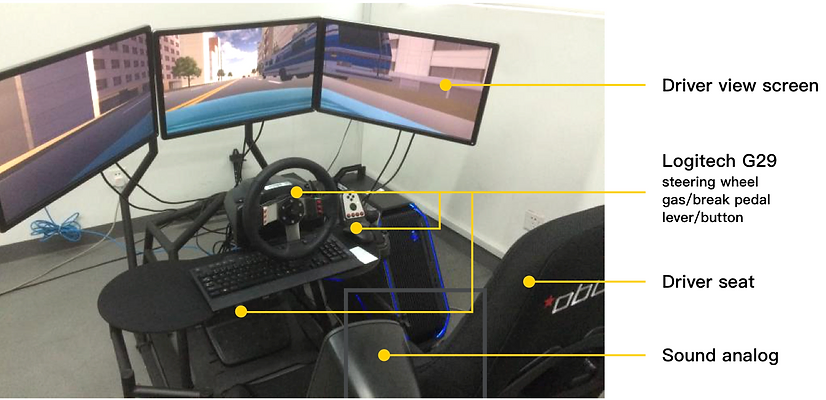
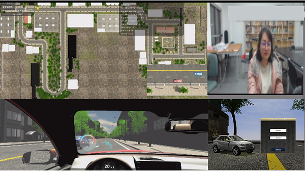
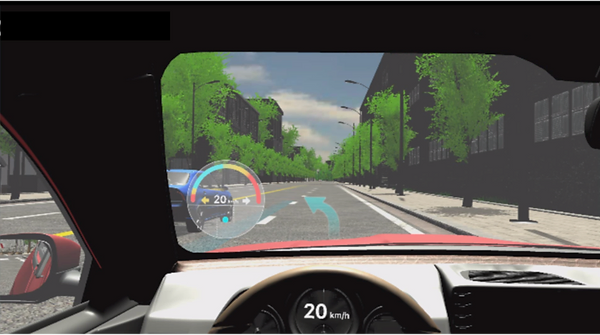
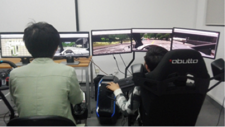
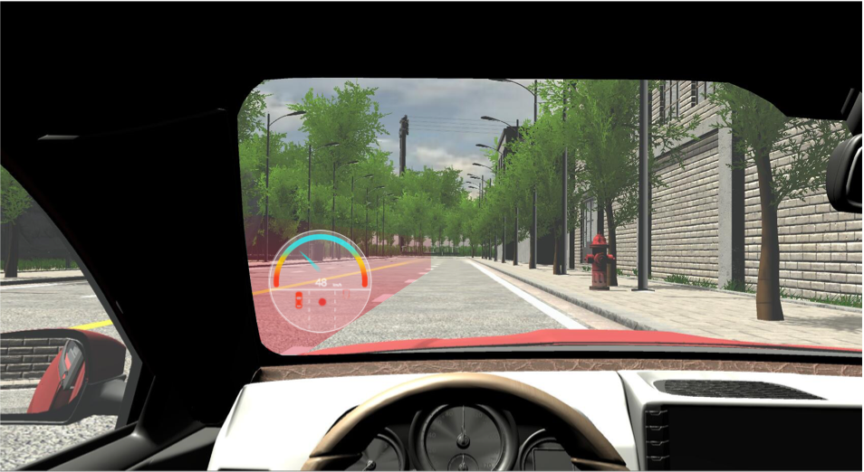
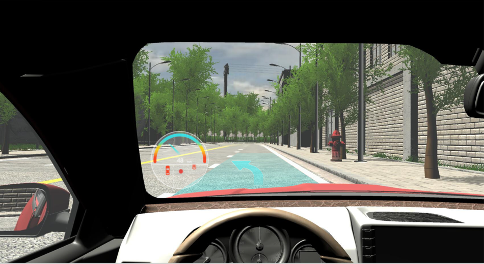

驾驶模拟器Driving Simulator
项目说明按旧站英文原文保留；时间与个人介绍反映当时的作品集记录。Original portfolio text is preserved in English. Dates and biographical information reflect the archived portfolio; see the academic homepage for current information.

Driving Simulator
07.2016--03.2017
Background
Building driving simulator mainly used for driver testing and interface testing. Cooperating with students who major in software engineering, we built lanes, architectures, weather, vehicle models in Unity, then we combined these models to create different driving scenarios, for instance, lane changing on two lanes city road (crowded) in normal weather. We designed HUD, AR-HUD and interface on the dashboard for different driving scenarios and tested the help of these indicators. In the future, we plan to utilize physiological test instruments to test the ECG and EEG of drivers. And we also want to utilize eye tracking in Unity to build up and analyze drivers' visual behavior.
I participated in the design of HUD indicator for lane-changing in typical Chinese driving scenario: cut in on two lanes city road (crowded) in normal weather and did usability testing.
Hardware of driving simulator

Driving simulator screens (keep updating)
1. Monitor screen
Consists of Map, driver monitor video, driver view screen and driving scenario switch screen which is controlled by operating staff.

2. Driving view screen

Driving Test

HUD Test


Lane-changing not recommended
Lane-changing recommended
Adjusting after lane-changing
Team: UxLab of Tongji University, School of Software Engineering, Tongji University